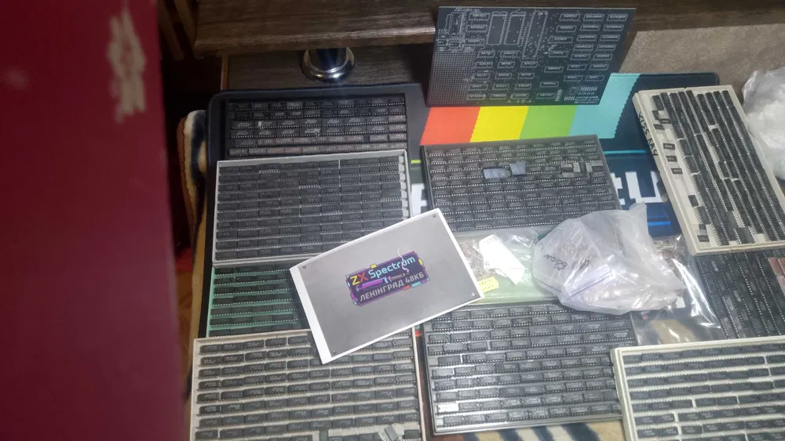

Ленінград 48 — це один із найвідоміших і наймасовіших клонів ZX Spectrum, який став справжнім символом комп'ютерної епохи 90-х у пострадянських країнах. Простота схеми та доступність компонентів зробили його ідеальним вибором для домашнього складання.
Даний варіант пропонується у вигляді конструктора, що дозволяє повністю зануритись у процес створення ретро-комп'ютера власноруч. Це не просто покупка — це досвід пайки, налаштування і першого запуску, як у старі добрі часи.
Плата сумісна з класичним програмним забезпеченням ZX Spectrum 48K, підтримує підключення магнітофона або сучасних завантажувачів, і може бути модифікована під RGB-відеовихід для кращої якості зображення.
Ідеально підходить для колекціонерів, ентузіастів ретро-техніки та тих, хто хоче відчути справжній дух DIY.
